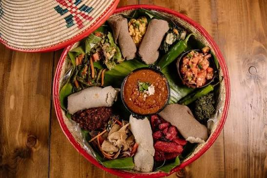

Välkommen till mina favoriträtter
Köttbullar
sushi
Sushi är gjort av ris, fisk eller grönsaker, det kan även vara med sjögräs
Shawarma
Det är oftast gjort av kryddat kött som är grillad på roterande spets
Pizza
Den är gjord av tomatsås, deg och ost.
injera
Injera är ett mjukt och syrligt bröd från Etiopien och Eritrea. Det görs oftast av teffmjöl och vatten. Man äter injera tillsammans med olika grytor, grönsaker och kött.
